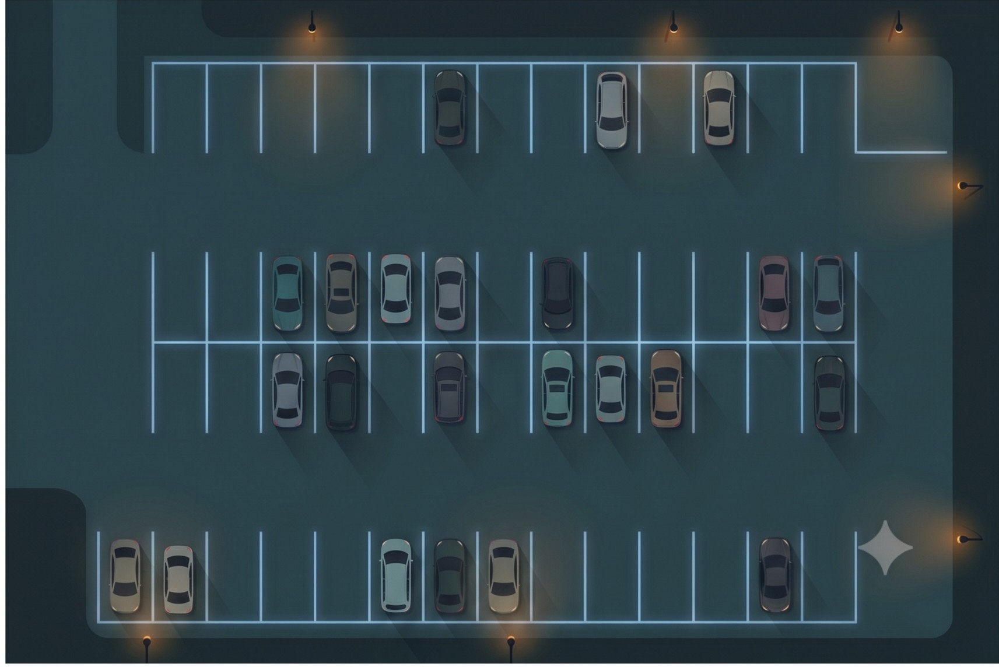

Hi I'm Suhaib Shaik
Summary
I’m a software and AI developer who enjoys turning ideas into practical, intelligent, and engaging digital experiences. I’m fascinated by how code can evolve into systems that see, learn, understand, and respond. I’m constantly exploring new technologies, experimenting with ideas, building isn’t just about making software — it’s about creating something useful, reliable, and alive.
“I don’t just want to use the future. I want to build it.”
Professional Iterations
- Developed and tested core backend software solutions, integrating machine learning models with client applications using Python and REST APIs.
- Conducted unit testing and comprehensive debugging to address system vulnerabilities and ensure highly scalable deployments.
- Collaborated with multifunctional teams to design efficient system architectures and maintain high code quality standards throughout the SDLC.
- Optimized application performance and supported overall software development workflows.
- Managed and analyzed large quantitative data files using Python and SQL to generate actionable insights and optimize data retrieval.
- Streamlined data collection practices and developed automated reporting workflows to translate complex business requirements into tangible data solutions.
- Created technical documentation and rapid proof-of-concepts (POCs) to demonstrate technology capabilities to stakeholders.
- Enhanced data accuracy by 15% through rigorous cleaning, processing, and monitoring.
Technical Portfolio
Driver Sentinel
Real-time AI Drowsiness Detection System for active safety monitoring.

LotManager
Full-stack Vehicle Parking Management software with real-time occupancy tracking.